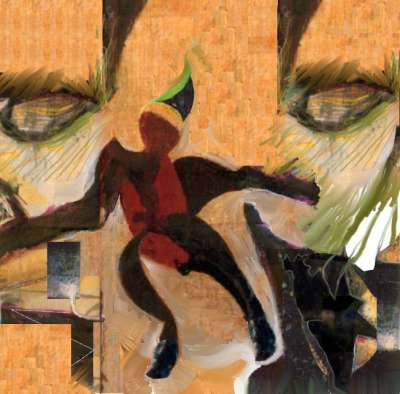

Knott an Essay (just an intro to ten short poems by Bill Knott) by Rose Kelleher 
“dismay dancer” – Bill Knott
In this 2006 interview, after pointing out that he’d never been included in Best American Poetry, never been asked to judge a poetry book contest, and never taught at a poetry conference, Bill Knott insisted: “These criteria are not matters of opinion, points of critical debate; they are factual data. Add them up and they measure failure.”
This comes a bit late, I know, but: Yeah, right, you’re a huge failure…Knott.
The critics can’t seem to reach a consensus about you, but they always seem to feel very strongly one way or another. You’ve been called a genius, a moron, eccentric, malignant, brilliant, mindless, disturbing, original, incompetent, and important. Successful poets don’t inspire that kind of extreme language. Successful poets get nice, tepid little reviews praising their attention to technique. That, after all, is what every poet wants to be remembered for after he dies: not his originality, but his neatness…
Knott.
Okay, enough with the puns. (I’m sorry, Knott.)
Bill Knott has written many different kinds of poems over the last fifty years. I’m especially drawn to the tiny ones, maybe because I have a short attention span; or maybe because they look so small and unassuming, hesitant to take up too much space—waifs who sing for their supper. So here are ten short poems by Bill Knott (reprinted with permission). If you want to read more, you can find his books on Lulu, where you can buy printed copies or download them for free in PDF form. He’s also an artist; you can find images of his hand-painted book covers on his art blog.
Death
Going to sleep, I cross my hands on my chest.
They will place my hands like this.
It will look as though I am flying into myself.
Poem
Even when the roads are empty,
even at night, the stopsign
tells the truth.
Hair Poem
Hair is heaven’s water flowing eerily over us
Often a woman drifts off down her long hair and is lost
Inthreadable
each snowflake’s
a maze
whose center
no other flake can find
the ways
to enter
Minor Poem
The only response
to a child’s grave is
to lie down before it and play dead
Advice from the Experts
I lay down in the empty street and parked
My feet against the gutter’s curb while from
The building above a bunch of gawkers perched
Along its ledges urged me don’t, don’t jump.
To X
You’re like a scissors
popsicle I don’t know to
whether jump back
or lick
Beddybye
Just hope that when you lie down your toes are a
—-firing-squad
Sleep
We brush the other, invisible moon.
Its caves come out and carry us inside.
Maybe (to H)
a stopsign stranded
in a sea of cacti
won’t grow needles
maybe but then
even I take on some
characteristics
of human when
I’m with you
|